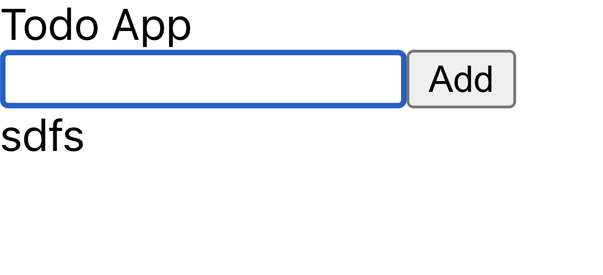

Greetings, esteemed readers! It is an absolute pleasure to see you all here. I trust that each one of you is in the pink of health and high spirits. In this post, we are going to containerize our todo application using docker compose. If you want to learn about docker compose, refer my post on Docker Compose. Let’s hit the road!
What is there to Cover?
We will be covering the following sections here.
- Setting up the project
- Create
Dockerfilefor the backend - Create
Dockerfilefor the frontend - Create a docker compose
- Spin up the compose
- An introduction to deploys
- Conclusion
Let’s follow through with each one of these sections.
Setting up the application
Prerequisites
- node
- npm
- mysql
- and docker of course
Create your sandbox directory where you would be writing the code. Clone the following project in your sandbox.
# ssh
⟩ git clone git@github.com:nitinsharmacs/bitphile-todo-app-docker-compose.git
# https
⟩ git clone https://github.com/nitinsharmacs/bitphile-todo-app-docker-compose.gitListing down the contents of the project, we will see.
⟩ tree (base)
.
├── README.md
├── backend
│ ├── README.md
│ ├── index.js
│ ├── package-lock.json
│ └── package.json
└── frontend
├── README.md
├── package-lock.json
├── package.json
├── public
│ ├── favicon.ico
│ ├── index.html
│ ├── logo192.png
│ ├── logo512.png
│ ├── manifest.json
│ └── robots.txt
└── src
├── App.css
├── App.js
├── App.test.js
├── components
│ ├── CreateTodo.jsx
│ ├── Header.jsx
│ └── TodoItems.jsx
├── index.css
├── index.js
├── logo.svg
├── reportWebVitals.js
└── setupTests.js
5 directories, 25 filesInstall dependencies in each of those directories.
⟩ cd frontend
⟩ npm install
⟩ cd ../backend
⟩ npm installNow, start both the backend and frontend.
frontend
⟩ npm start
backend
⟩ npm startFacing issues with MySQL db? Please make sure it is running. Also, provide environment variables,
DB_USERandDB_PASSWORDwhile running the backend.
Open localhost:3000, and you should see an ugly page without CSS. Let’s not worry about the styling of the page.

You should be able to add a to-do.
Create Dockerfile for the backend
Let’s write Dockerfile for the backend.
FROM node:12-alpine
COPY package.json package.json
RUN npm install
ENV NODE_ENV=production
COPY index.js index.js
CMD ["npm", "start"]
EXPOSE 3001Copy and paste this content inside backend/Dockerfile.
Now, build the image.
⟩ docker build -t bitphile/todo-backend .Let’s try running the image we’ve just built.
⟩ docker run -d --name todo-backend -p 3001:3001 bitphile/todo-backend
68dc2b21f5e2b8a6d54c35dc46a56f6d0e117793a2a7c1e80dab42ae91826f93Seeing the logs of the container,
⟩ docker logs -f 68dc2b21f5e2b8a6d54c35dc46a56f6d0e117793a2a7c1e80dab42ae91826f93
> backend@1.0.0 start /
> node .
(node:18) UnhandledPromiseRejectionWarning: Error: getaddrinfo EAI_AGAIN mysql-server
at Object.createConnection (/node_modules/mysql2/promise.js:242:31)
at Object.<anonymous> (/index.js:54:4)
at Module._compile (internal/modules/cjs/loader.js:999:30)
at Object.Module._extensions..js (internal/modules/cjs/loader.js:1027:10)
at Module.load (internal/modules/cjs/loader.js:863:32)
at Function.Module._load (internal/modules/cjs/loader.js:708:14)
at Function.executeUserEntryPoint [as runMain] (internal/modules/run_main.js:60:12)
at internal/main/run_main_module.js:17:47
(node:18) UnhandledPromiseRejectionWarning: Unhandled promise rejection. This error originated either by throwing inside of an async function without a catch block, or by rejecting a promise which was not handled with .catch(). To terminate the node process on unhandled promise rejection, use the CLI flag `--unhandled-rejections=strict` (see https://nodejs.org/api/cli.html#cli_unhandled_rejections_mode). (rejection id: 1)
(node:18) [DEP0018] DeprecationWarning: Unhandled promise rejections are deprecated. In the future, promise rejections that are not handled will terminate the Node.js process with a non-zero exit code.
🤯 We are bombarded with an error. If we see it, it is crying because of the MySQL connection. Our container is not able to connect to the MySQL server. And this is straightforward as no MySQL container is running in the network. We will look at it later when we compose our application. For now, let’s move ahead.
Create Dockerfile for frontend
Copy the following Dockerfile content inside frontend/Dockerfile
FROM node:12-alpine AS builder
WORKDIR /app
COPY package.json package.json
RUN npm install
COPY . .
RUN npm run build
FROM nginx:alpine
WORKDIR /usr/share/nginx/html
RUN rm -rf ./*
COPY --from=builder /app/build .
ENTRYPOINT ["nginx", "-g", "daemon off;"]Option
daemon offspecifies nginx to run in the foreground so that the container will continue running. If we don’t specify this option, the nginx service would run in the background and the container will stop running as there is nothing to hold it up.
Let’s build the image.
⟩ docker build -t bitphile/todo-frontend . (base)
Sending build context to Docker daemon 478.7kB
Step 1/11 : FROM node:12-alpine AS builder
---> bb6d28039b8c
Step 2/11 : WORKDIR /app
---> Using cache
---> 8610e0568d30
Step 3/11 : COPY package.json package.json
---> 2cf4f42b3f97
Step 4/11 : RUN npm install
---> Running in 0606b5b332ec
performance.now() and performance.timeOrigin.
> core-js@3.29.1 postinstall /app/node_modules/core-js
> node -e "try{require('./postinstall')}catch(e){}"
Thank you for using core-js ( https://github.com/zloirock/core-js ) for polyfilling JavaScript standard library!
The project needs your help! Please consider supporting of core-js:
> https://opencollective.com/core-js
> https://patreon.com/zloirock
> https://boosty.to/zloirock
> bitcoin: bc1qlea7544qtsmj2rayg0lthvza9fau63ux0fstcz
I highly recommend reading this: https://github.com/zloirock/core-js/blob/master/docs/2023-02-14-so-whats-next.md
> core-js-pure@3.29.1 postinstall /app/node_modules/core-js-pure
> node -e "try{require('./postinstall')}catch(e){}"
Thank you for using core-js ( https://github.com/zloirock/core-js ) for polyfilling JavaScript standard library!
The project needs your help! Please consider supporting of core-js:
> https://opencollective.com/core-js
> https://patreon.com/zloirock
> https://boosty.to/zloirock
> bitcoin: bc1qlea7544qtsmj2rayg0lthvza9fau63ux0fstcz
I highly recommend reading this: https://github.com/zloirock/core-js/blob/master/docs/2023-02-14-so-whats-next.md
added 1489 packages from 684 contributors and audited 1490 packages in 69.985s
233 packages are looking for funding
run `npm fund` for details
found 1 high severity vulnerability
run `npm audit fix` to fix them, or `npm audit` for details
Removing intermediate container 0606b5b332ec
---> e84821d3c273
Step 5/11 : COPY . .
---> 2582c9e1ccf7
Step 6/11 : RUN npm run build
---> Running in 24a2880afcea
> todo-app@0.1.0 build /app
> react-scripts build
Creating an optimized production build...
Compiled successfully.
File sizes after gzip:
47.56 kB build/static/js/main.bf9caf07.js
1.78 kB build/static/js/787.2843ca88.chunk.js
264 B build/static/css/main.e6c13ad2.css
The project was built assuming it is hosted at /.
You can control this with the homepage field in your package.json.
The build folder is ready to be deployed.
You may serve it with a static server:
npm install -g serve
serve -s build
Find out more about deployment here:
https://cra.link/deployment
Removing intermediate container 24a2880afcea
---> ca6123013213
Step 7/11 : FROM nginx:alpine
---> 2bc7edbc3cf2
Step 8/11 : WORKDIR /usr/share/nginx/html
---> Using cache
---> 14150ff7fb4b
Step 9/11 : RUN rm -rf ./*
---> Using cache
---> dec51b86101d
Step 10/11 : COPY --from=builder /app/build .
---> bfc76e5e13ec
Step 11/11 : ENTRYPOINT ["nginx", "-g", "daemon off;"]
---> Running in c01fb95e9ca3
Removing intermediate container c01fb95e9ca3
---> 9ad959056d7a
Successfully built 9ad959056d7a
Successfully tagged bitphile/todo-frontend:latest
Let’s run the image.
⟩ docker run -d --name todo-frontend -p 4000:80 bitphile/todo-frontendNow, if we open http://localhost:4000, we should the to-do page.
Create Docker Compose file
It is time to take the whole picture of our application. To run our application with all those services, we have to create a docker-compose.yml file. Let’s do create one.
version: '3.7'
name: todo-app
services:
todo-frontend:
container_name: todo-frontend
build: ./frontend
ports:
- 4000:80
networks:
- todo-app
depends_on:
- todo-backend
todo-backend:
container_name: todo-server
build: ./backend
ports:
- 3001:3001
networks:
- todo-app
environment:
- NODE_ENV=production
- DB_USER=root
- DB_PASSWORD=password
depends_on:
- mysql
mysql:
container_name: mysql-server
image: mysql:5.7
volumes:
- ./mysql:/var/lib/mysql
environment:
MYSQL_ROOT_PASSWORD: password
MYSQL_DATABASE: todo_app
networks:
- todo-app
networks:
todo-app:
Let’s do compose up,
⟩ docker compose up -d (base)
[+] Building 83.3s (22/22) FINISHED
=> [todo-app_todo-frontend internal] load build definition from Dockerfi 0.0s
=> => transferring dockerfile: 305B 0.0s
=> [todo-app_todo-backend internal] load build definition from Dockerfil 0.0s
=> => transferring dockerfile: 191B 0.0s
=> [todo-app_todo-frontend internal] load .dockerignore 0.0s
=> => transferring context: 61B 0.0s
=> [todo-app_todo-backend internal] load .dockerignore 0.0s
=> => transferring context: 60B 0.0s
=> [todo-app_todo-frontend internal] load metadata for docker.io/library 0.0s
=> [todo-app_todo-backend internal] load metadata for docker.io/library/ 0.0s
=> CACHED [todo-app_todo-frontend builder 1/6] FROM docker.io/library/no 0.0s
=> [todo-app_todo-frontend stage-1 1/4] FROM docker.io/library/nginx:alp 0.0s
=> [todo-app_todo-frontend internal] load build context 0.0s
=> => transferring context: 458.37kB 0.0s
=> CACHED [todo-app_todo-frontend stage-1 2/4] WORKDIR /usr/share/nginx/ 0.0s
=> [todo-app_todo-frontend stage-1 3/4] RUN rm -rf ./* 0.5s
=> CACHED [todo-app_todo-frontend builder 2/6] WORKDIR /app 0.0s
=> [todo-app_todo-frontend builder 3/6] COPY package.json package.json 0.0s
=> [todo-app_todo-backend internal] load build context 0.0s
=> => transferring context: 1.60kB 0.0s
=> [todo-app_todo-backend 2/4] COPY package.json package.json 0.0s
=> [todo-app_todo-frontend builder 4/6] RUN npm install 69.0s
=> [todo-app_todo-backend 3/4] RUN npm install 5.9s
=> [todo-app_todo-backend 4/4] COPY index.js index.js 0.0s
=> [todo-app_todo-frontend] exporting to image 0.2s
=> => exporting layers 0.0s
=> => writing image sha256:c30480a00b3ca5464f566693178dd5ae117d60a3a62e5 0.0s
=> => naming to docker.io/library/todo-app_todo-backend 0.0s
=> => writing image sha256:28501b3d67ba977a812cfc9e21e91279e52765dc1276a 0.0s
=> => naming to docker.io/library/todo-app_todo-frontend 0.0s
=> [todo-app_todo-frontend builder 5/6] COPY . . 0.0s
=> [todo-app_todo-frontend builder 6/6] RUN npm run build 13.5s
=> [todo-app_todo-frontend stage-1 4/4] COPY --from=builder /app/build . 0.0s
[+] Running 4/4
⠿ Network todo-app_todo-app Created 0.0s
⠿ Container mysql-server Started 0.7s
⠿ Container todo-server Started 1.1s
⠿ Container todo-frontend Started 1.6s
Great! Containers seemed to be started. Let’s see,
⟩ docker compose ps -a (base)
NAME COMMAND SERVICE STATUS PORTS
mysql-server "docker-entrypoint.s…" mysql running 3306/tcp, 33060/tcp
todo-frontend "nginx -g 'daemon of…" todo-frontend running 0.0.0.0:4000->80/tcp
todo-server "docker-entrypoint.s…" todo-backend running 0.0.0.0:3001->3001/tcp, 3001/tcp
Now, open http://localhost:4000 and add todos.
An introduction to deploys
We can create multiple containers for the same service using deploy in docker compose.
version: '3.7'
name: todo-app
services:
todo-frontend:
container_name: todo-frontend
build: ./frontend
ports:
- 4000:80
networks:
- todo-app
depends_on:
- todo-backend
todo-backend:
container_name: todo-server
build: ./backend
ports:
- 3000:3000
networks:
- todo-app
environment:
- NODE_ENV=production
- DB_USER=root
- DB_PASSWORD=password
depends_on:
- mysql
deploy:
mode: replicated
replicas: 2
mysql:
container_name: mysql-server
image: mysql:5.7
volumes:
- ./mysql:/var/lib/mysql
environment:
MYSQL_ROOT_PASSWORD: password
MYSQL_DATABASE: todo_app
networks:
- todo-app
networks:
todo-app:So, this would create two replicas of the service todo-backend. The routing of which container the request should be sent to would be taken care of by the docker itself.
Restart policy
If the container dies unexpectedly, docker compose can restart the container. Docker compose provides a restart policy for the same that we can define in docker compose file.
version: '3.7'
name: todo-app
services:
todo-backend:
container_name: todo-server
build: ./backend
ports:
- 3001:3001
networks:
- todo-app
environment:
- NODE_ENV=production
- DB_USER=root
- DB_PASSWORD=password
depends_on:
- mysql
deploy:
mode: replicated
replicas: 2
restart_policy:
condition: any
delay: 5s
max_attempts: 2
window: 80scondition means the condition to restart the service. delay is the delay in subsequent restart tries and window means how long to wait to decide if the restart is done.
Conclusion
Well, this is it for now. I hope you find this useful. If there is any problem while setting up the project and running that up, please drop a comment. Please share your feedback and what our next junction topic should be, in the comment section.
Until then,